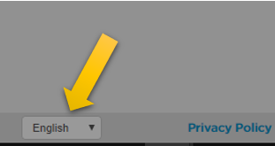

O jogo que você irá jogar agora parece bem bobinho, mas à medida que as fases passam vai ficando bem complicado.
Se o jogo estiver em inglês, você pode clicar nesse menu que está no canto inferior esquerdo da tela e escolher a opção "Português (Brasil).
Nesse jogo você irá praticar os principais conceitos da programação: comandos em sequência, execução condicional, e repetição. Assim, quando você for estudar isso em Python, achará bem mais fácil.